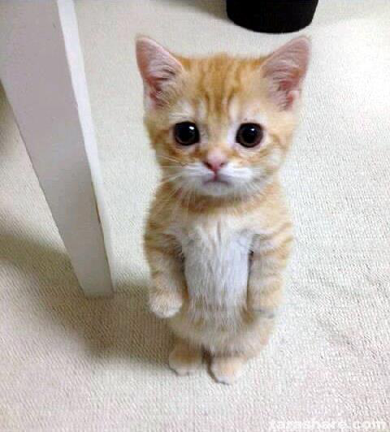
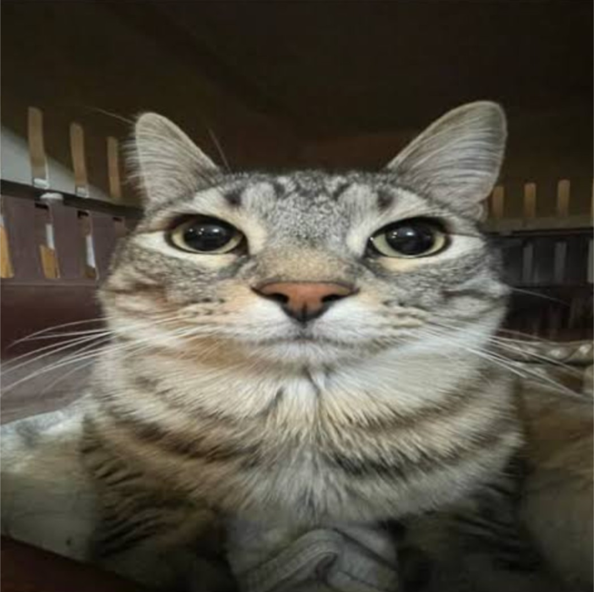
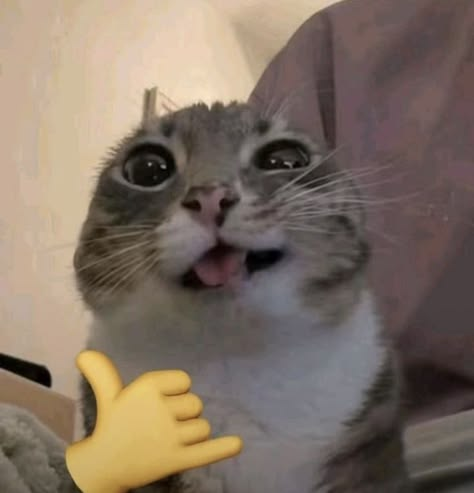

These adorable cats look like they are always wearing socks and gloves, thanks to their white feet.
The Norwegian forest cat looks like a creature right out of a Ghibli movie. With their big, curious eyes and soft scruff of fur, these cats are beautiful and graceful.
How can you resist that grumpy face? Exotic Shorthairs look like they just ran face-first into a wall, but it’s all part of their distinctive charm.